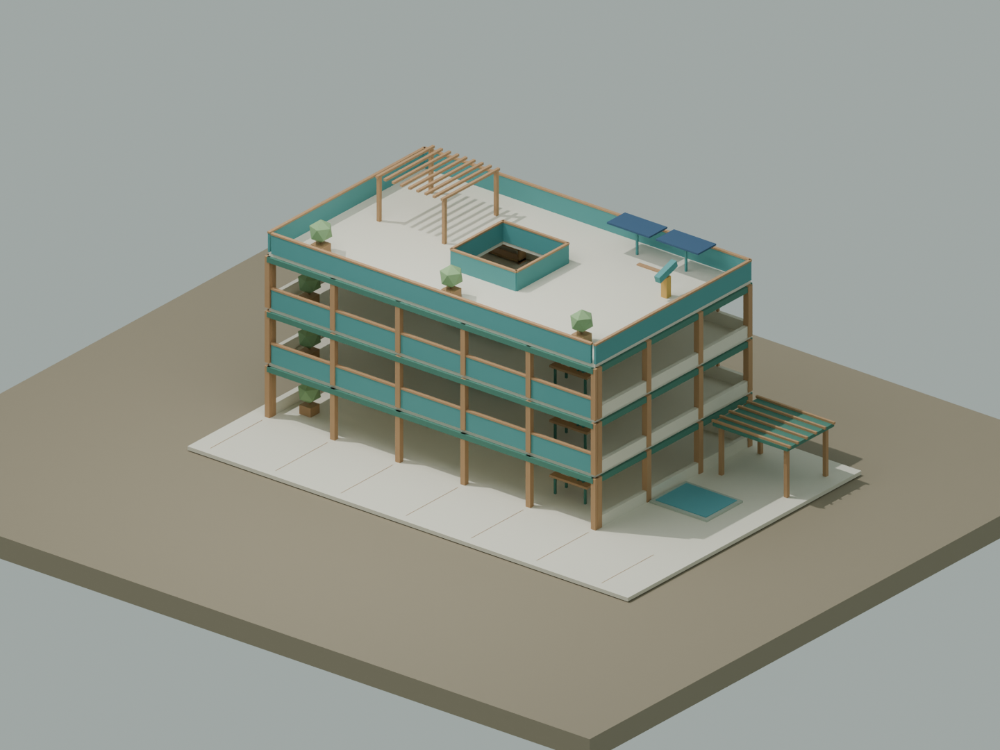

← 返回工坊点亮第一夜

- WASD 或方向键移动，拖动调整视角，靠近物资按 E。
- 两份木材、一份石材，在庭院篝火旁按 C 点火。
- 青色楼梯圈旁 E 上楼、Q 下楼；二、三、四层各取一枚晶体。
- 带三份木材、两份石材、三枚晶体到顶层信标处按 E，完成三次对准挑战。
- F 吃食物，到水池岸边 R 喝水，回篝火撑到天亮。
藏在世界里的小入口
四楼观测平台寻找鱼竿；篝火点燃后再添一份木材；东侧挑战机械哨犬。小游戏在新标签页打开，切回后点击“返回 AHA”。
创作与伙伴
自由创作可直接选楼层，B 建造、1/2 选材、右键回收。联机最多 8 人；昵称使用虚构名字。小芽用有限动作帮忙，@AHA 提供房间问答。配置 AI 服务后，问答可能发送房间消息和状态，不要输入私人信息。
读制作文章 ↗ · 回到工坊